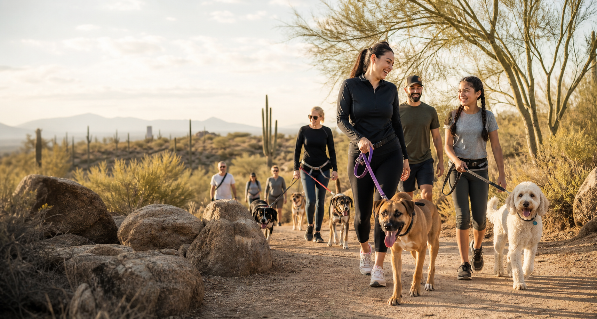
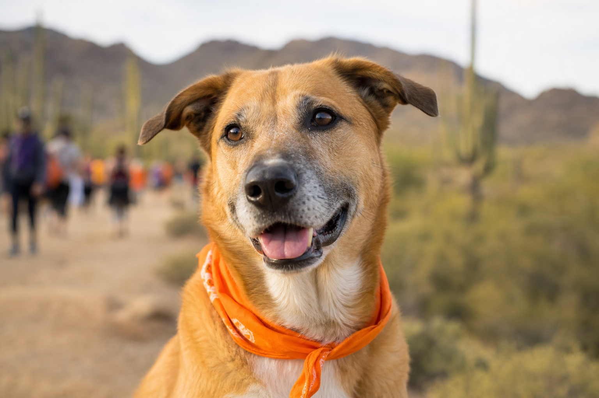
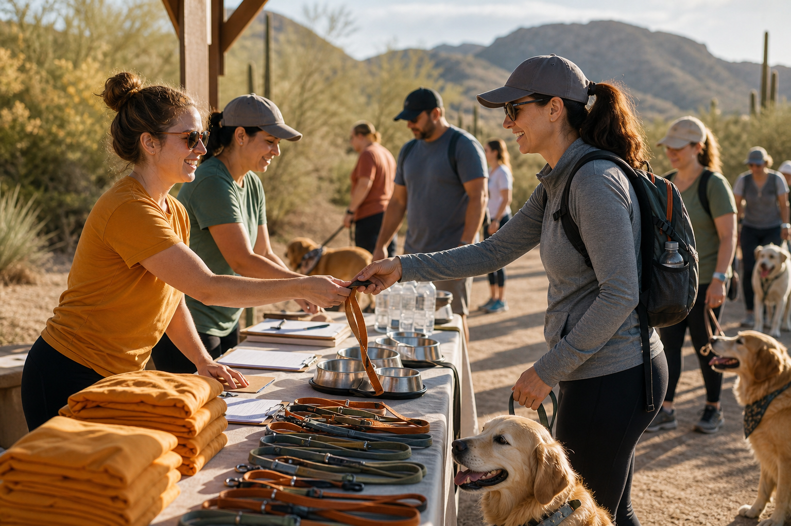
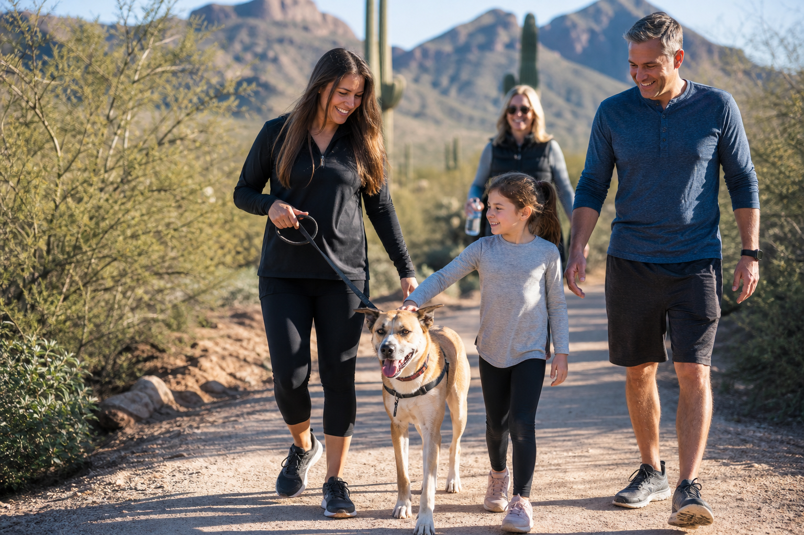
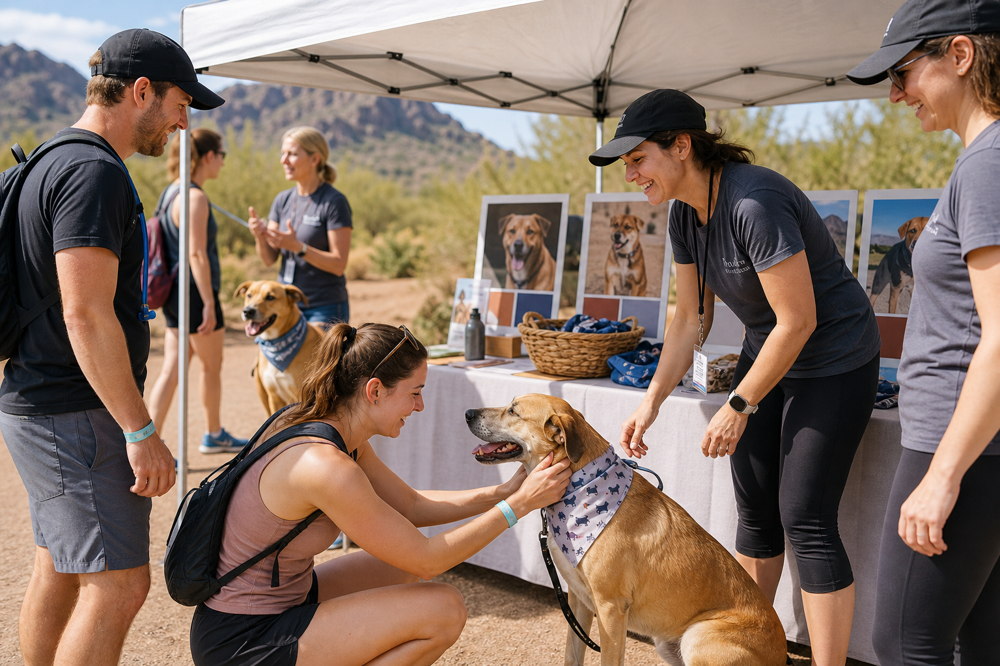

Trail Walk
Join a morning community walk shaped for people, pups, and rescue stories.

FDLD presents
No Paw Left Behind
Walk the trail. Help a dog find home. Join a charity walk and adoption day built for rescue dogs, neighbors, volunteers, and future families.
Event snapshot
Join a morning community walk shaped for people, pups, and rescue stories.
Meet featured dogs and talk with FDLD volunteers about the next step home.
Hydration, shade moments, and calm check-ins keep the day dog-first.
Start a team for your business, gym, school, neighborhood, or friend group.
Adoption countdown
The wall turns attendance into visible momentum: RSVP, meet dogs, sponsor stations, and help FDLD fill every adoption conversation slot.
Use 12601 N. 124th St. as the public-facing trailhead address. Arrive early for closest spaces.
Use the trailhead entrance as the ride-share drop point, then follow volunteer signs to check-in.
Final route timing may shift if trail temperatures are unsafe for dogs.
A day at the trail
The event moves from check-in to trail walk to adoption conversations, with every touchpoint designed to make rescue dogs visible, safe, and loved.
Arrive, meet volunteers, and settle dogs into the morning rhythm.
Head out together across a scenic Lost Dog Trail community route.
Visit adoption hosts, learn each dog's story, and ask practical questions.
Volunteer, donate, and help FDLD keep every paw moving toward home.
Trail maps
The walk starts from Lost Dog Wash Trailhead at 12601 N. 124th St. Sponsor stops and volunteer stations are shown as event-day planning markers.
Lost Dog Wash Trailhead, 12601 N. 124th St., Scottsdale, AZ 85259
Open detailed mapA planning overlay on the Lost Dog Wash area, showing the event loop, trail connectors, sponsor stations, adoption mile, and finish photo spot.
Trail weather
Scottsdale desert weather can shift quickly. Use current conditions as a planning cue, then adjust walk length, shade breaks, and water for every dog.
Fetching current Scottsdale trail conditions.
If pavement or rock is too hot for your hand, it is too hot for paws.
Bring a collapsible bowl and plan more water than you think you need.
Heavy panting, lagging, glassy eyes, or drooling mean stop and cool down.
Short, calm breaks keep dogs safer than pushing through desert heat.
Interactive trail journey
Each event moment gives visitors a reason to RSVP, share, sponsor, or volunteer before they reach the form.

Stop 01Fast RSVP check-in, team photos, sponsor greetings, and dog-safe water reminders.
A scenic shared route designed for adoptable dogs, family walkers, and local teams.

Stop 03Meet adoptable dogs, hear their stories, and schedule next-step conversations.

Stop 04A shareable finish moment that turns walkers into advocates for the next dog home.
Featured adoptables
Start with a few spotlight dogs, then open the full directory to sort by dog type, age, and adoption status.
Community proof
"We came for a Saturday walk and left with the confidence to adopt. The volunteers made every question feel welcome."
Past adopter placeholder
"Sponsoring a water stop gave our team a real way to help, meet neighbors, and support dogs looking for home."
Local sponsor placeholder
"The trail format made adoption feel calm and human. You get to see each dog's personality outside a kennel."
FDLD volunteer placeholder
Gallery

Team fundraising
Teams help attendance spread through workplaces, schools, gyms, neighborhoods, and friend groups. The first version captures interest and shows sample momentum.
$1,850 pledged | 14 walkers
$1,240 pledged | 10 walkers
$980 pledged | 8 walkers
Volunteer crew
Volunteers help with check-in, water and shade stations, adoption host support, photo moments, setup, teardown, and wayfinding along the route.
Place signage, prepare RSVP lists, organize bowls, and welcome teams.
Guide walkers, monitor water points, and help dogs take shade breaks.
Help match interested families with volunteers for next-step conversations.
Sponsor spots
Sponsors can reserve event-day trail spots for water, shade, adoption support, photos, and welcome moments. Spots are placeholders until FDLD confirms final route permissions.
Hydration moment along the route with sponsor recognition.
Featured support near adoption conversations and dog profiles.
High-visibility photo area for walkers, families, and pups.
Before you RSVP
Yes, if your dog is comfortable around people and other dogs, leashed at all times, and able to handle the weather safely.
Some trail surfaces may be uneven. The final event route should favor the most accessible trailhead areas when possible.
Use the Lost Dog Wash Trailhead lot at 12601 N. 124th St. and watch for event signage near check-in.
FDLD can shorten the route, add shade breaks, shift meetup activity toward the trailhead, or adjust timing to protect dogs.
Use the Request meetup button on that dog's card. The RSVP note will include the dog's name for volunteer follow-up.
RSVP
Tell FDLD how you want to participate. This first version confirms your RSVP on screen and can be connected to storage later.
Admin portal
Supabase admin access lets FDLD review RSVPs, sponsor requests, team signups, and add gallery photos backed by the live database.
| Name | Party | Walk mode | Interest |
|---|